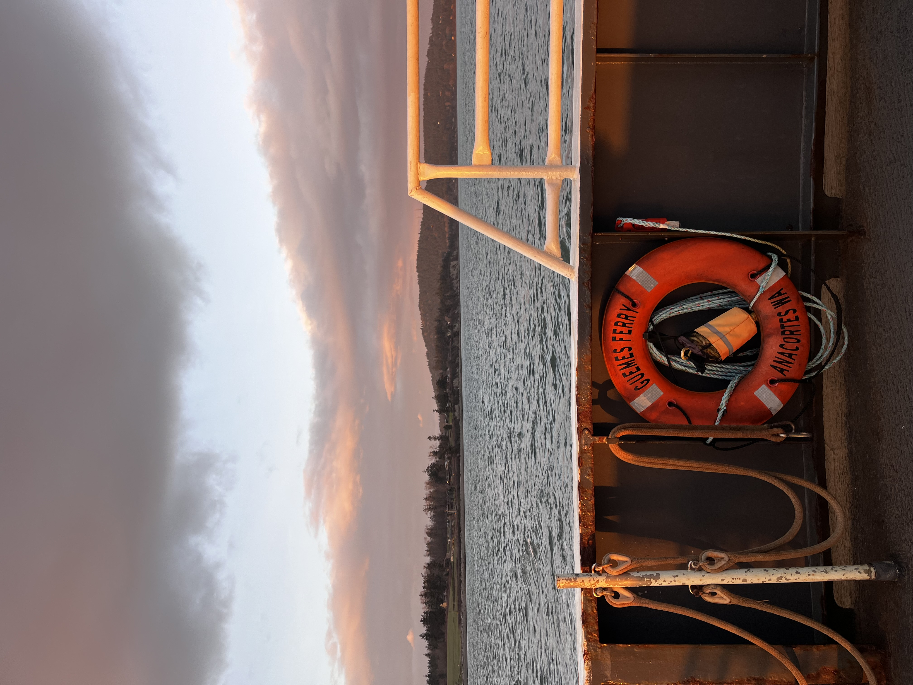

Thrust Vector
Controlled Rocket
For my first personal engineering project, I am designing a rocket that relies on engine gimbaling for stability instead of fins. This is no easy task, but I am prepared to iterate and refine the design until I achieve success. The idea came to life during senior year winter break and now doubles as my Senior Physics Design Project. I'm targeting a static thrust test by the end of the semester and will keep updating this page as progress is made.
Flight Controller & Software

The core of this project involves designing a custom flight controller and its accompanying software. With no prior PCB experience, I went with a perforated circuit board approach — I'm now fully convinced I'll never choose a perforated board again. Soldering everything by hand has scarred me.
The setup consists of a primary board serving as the flight controller and a secondary board dedicated to powering all systems. A 1500 mAh 7.4V battery was selected to power everything. Two step-down voltage regulators were used: one for the flight controller and one for all servos. All sensors (barometer, IMU, FRAM, etc.) are 3V-capable, so the Teensy supplies them directly.
For state indication, I used a buzzer and an RGB LED to show which state the system is currently in. Still working on a cool startup sound — trying to top the one used in Pixhawk autopilots, which has been a big inspiration for this project.
Payload Design

Once the flight computer was prototyped, it was time to move on to CAD. The main goal for this design was modularity — creating components that could easily connect to one another. Long structural side beams tie everything together, attaching securely to each module. The circuit boards are mounted with screws, held in place by custom brackets extending from the top and bottom of each segment.
The full assembly consists of three main parts: a top piece holding the flight computer, a middle piece supporting the bottom of the flight computer and top of the power board, and a bottom piece supporting the power board and serving as the battery holder.
TVC Mount

This design was wholeheartedly inspired — okay, stolen — from one of my biggest inspirations, Joe Barnard, the creator of BPS Space. His platform has been an invaluable resource since the start of this project, especially in helping me develop the flight controller and TVC mount. The specific video that helped me most is linked here.
The gimbal mount consists of three main parts: the gimbal tube, an inner component, and an outer component. The inner part rotates the motor on one axis and actuates the gimbal tube, while the outer part allows the whole assembly to pivot relative to the inner part.
The most challenging aspect was working within the constraint of the rocket's 74mm outer body tube. Fitting the entire TVC system inside that diameter takes some finesse.
Flight Simulation
Standing
Desk Build
When I moved into a one-bedroom apartment in the beautiful Lettered Streets neighborhood of Bellingham, I made a deliberate choice: I rented the place unfurnished. I wanted the responsibility and freedom of furnishing the space myself. I had a temporary desk, a square foldable card table, that just needed to go. I drew inspiration from my older brother Peter, who bought a live edge wood slab and built a standing desk for himself. So, as one would, I took to Facebook Marketplace. This led me to a small island called Guemes, where I met my guy RV (yep, his name is RV).
Guemes Island Adventure

DeeBee was visiting me in Bellingham at the time, and I decided to drop an adventure proposal on him: a trip to Guemes Island to check out RV's live edge slabs. After work I picked him up at the bus stop in Burlington. We ventured to the Guemes Island Ferry, just on the edge of Anacortes. The ferry ride was short but scenic, and we took a short ride over to RV's place. We pulled into his driveway and were a little scared to approach the property. RV came out to meet us and showed us his shop. Instead of having a large space for his woodshop, he built it modularly using shipping crates. Literally his live edge planer was shipped from Australia in a crate, and he just repurposed the crate as the base for the planer. I settled on an oak slab that was 67" x 30" and about 2.5" thick. RV gave us some Beta on the best scenic spots in Guemes and we headed out to explore the island a bit before catching the ferry back. We stopped at a little beach access point and watched the sunset over the water. It was a great way to end the day and kick off the desk project.
Epoxy & Sanding


After getting the slab home, I set up a workspace in my apartment and got to work. The first step was cutting down the slab to size. I needed two people to maneuver it, so I asked Harpoon if he would be down to help me for a weekend of fun. I used a circular saw to cut the length from 67" to a more manageable 52".
The second step was filling in some of the cracks with some wood epoxy. I made the mistake of getting a 3 minute working time epoxy, as that was all they had at the store, but hey, the guy gave me free black dye. I learned really quickly how fast the stuff sets. This made the process x3 longer than it should have been, as I had to mix the batches in small sizes to avoid it from blocking up during application. I ended up doing about 4 rounds of epoxy application, sanding it down to smooth it out in between each round. This was definitely the most time consuming part of the process. The sanding setup was accomplished by utilizing my apartment's fire escape. Many people stumbled upon me sanding a giant piece of wood on the fire escape. Luckily no one informed the landlord.
Stain & Assembly


I went with a Rubio Monocoat finish, preserving the natural look of the oak while giving it a nice protective layer. I used a kitchen spatula to spread the finish evenly across the top surface. I've been hesitant to cook with that spatula since. I assembled the standing desk frame I got from Amazon, installing custom inserts to connect the legs to the desktop. Did some math and thankfully everything lined up. Flipping it upright for the first time nearly broke my back. The final product turned out amazing. Super happy with the finish and the choice to add black dye into the epoxy. Man did I feel alive when it finally came together. Happy to say my apartment is no longer a woodshop; well at least for now.